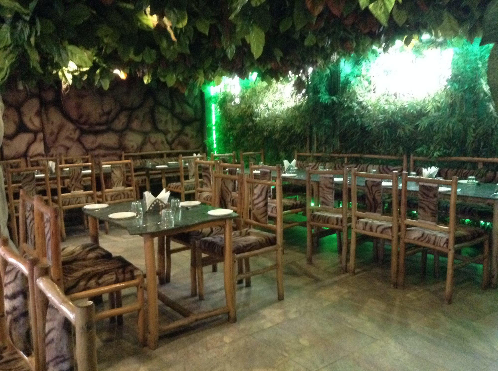

Quem somos nós
Nossa história:
Motivados pelos movimentos abolicionistas que defendem o fim da exploração animal, iniciamos nossas atividades em outubro de 2014 como uma alternativa vegana no mercado gastronômico gaúcho. Inspirados em modelos de negócio que aliam saúde, ecologia, sustentabilidade e cultura, procuramos reproduzir pratos da culinária tradicional brasileira e da alta gastronomia internacional em versões 100% vegetais.